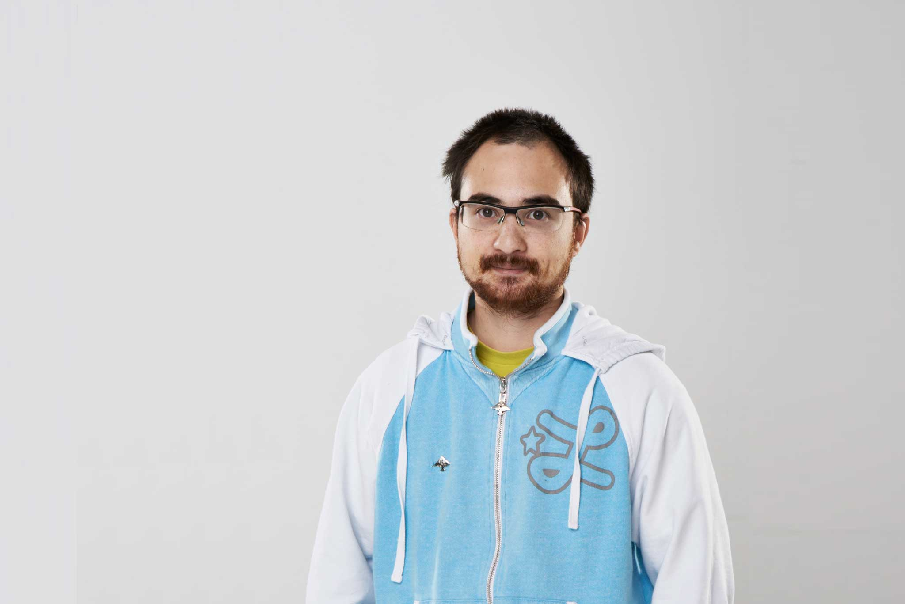

Om mig

Hej!
En utvecklare som är 3Xår gammal.
Mina kvalifikationer förutom kärlek till Wordpress är:
- HTML 5
- CSS 3/SCSS
- PHP
- jQuery
- MySQL
- GIT
En utvecklare som är 3Xår gammal.
Mina kvalifikationer förutom kärlek till Wordpress är:
040.se, hade jättekul att lära mig nya idéer hur man arbeterar inom projekt och kod. Där fick jag lära mig hur larvel fungerade och mer djupgående inom jQuery/php. Mitt ansvar var inom:
Efter ett halvår fick jag heltid som WordPress utvecklare. Mitt ansvar att ta hand om support för deras kunder och se till hemsidor var iaf en gång i veckan uppdaterad till det senaste och inget skulle gå sönder. ⊳
Praktik och chans att få jobb som heltidsarbetare inom WordPress. Fick massor med bra tips och tricks inom WordPress som jag inte visste när jag var mer "hobby utvecklare". ⊳
En från Chillzone frågade mig om jag var intresserad att testa bygga en webbapp för en av deras sponsorer. Byggde en enkät app som skulle visa ut frågor och sedan spara ner vad X människor har svarat på och sedan visa ut statistik i olika sätt.
Arbetsplats via AMS.
Fick i uppdrag lära ut WordPress och bygga med ungdomar från ålder 10-15 tillsammans deras nya fritidsgård hemsida som Hisingenskommun har sponsrat med.
Samma översikt som FooCafé fast skillnad är istället för barn/ungdomar är det nu vuxna.
Vi har delat upp kurser och mitt ansvar är att lära ut GIT/Terminal hur det fungerar i verkliga arbetslivet.
⊳
Volentär arbete för Malmö Stad.
Måndagar och onsdagar arbetar jag från 17:30 - 19:30 (brukar sluta 20:30 för städning och efterprat) med från 2st till 20st ungar i åldern 7år till 17år gamla. Ungarna är där för lära sig programering.
Jag har ansvar över nybörjarkursen.
⊳
Retorik, konsten att kunna prata med folk och visa utstrålning. Gick där och fick lära mig att det är inte så lätt att prata med massor med folk i verkligheten. Kursen gav mig bra lärdom.
Här är utbildningen som gav mig intresse för WordPress. Det vi lärde oss här var: